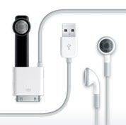

Using the bubbling core (6kb) to extend the YUI functionalities to create a simple and extensible Accordion Menu...
(Deprecated in favor of the new AccordionManager Widget)
 Apple accessories help you get the most out of your iPhone. Find out more
No matter how you look at it, the iPhone design is incredible. View photos
Want to take iPhone for a spin? Watch this
iPhone shows what it can do in these TV commercials. View video